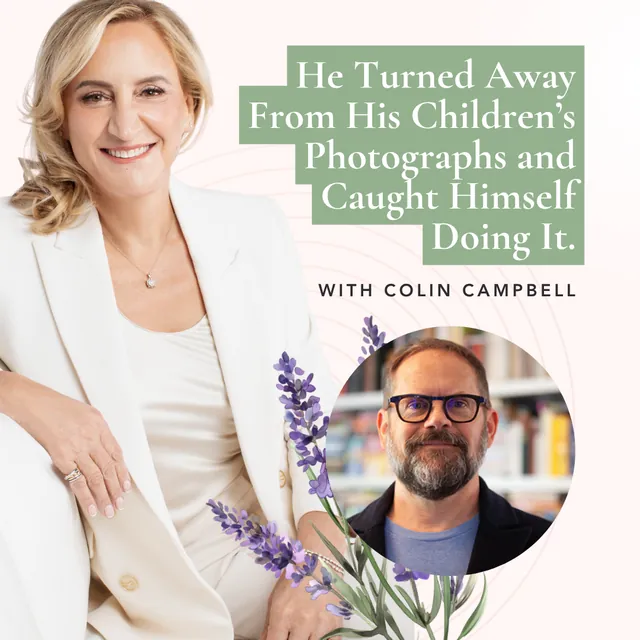

The Sincerely Show, with Colin Campbell
Finding the Words: Working Through Profound Loss with Hope and Purpose
He turned away from his children’s photographs and caught himself doing it.

Katherine Dudtschak sits down with Colin Campbell, writer, theater director, Academy Award-nominated filmmaker, and author of Finding the Words: Working Through Profound Loss with Hope and Purpose. In June 2019, Colin and his wife Gail were in the car when a drunk and high driver struck their family at speed on a California highway. Their two teenage children, Ruby, 17, and Hart, 14, were killed. Colin and Gail survived.
What Colin did with that fact is the subject of this conversation. He and Gail have since adopted two teenagers through the foster system, fulfilling a vision Ruby herself shared with them a year before she was killed. He wrote a book built on one central insight: most people who disappear after a loss do not disappear from indifference. They disappear because they do not know what to say. And learning to ask for what you need is one of the most generous things a grieving person can do for the people who love them.
This conversation covers grief, forgiveness, the long road toward opening your heart again, Ruby and Hart as the specific and extraordinary people they were, and what it means to choose love as a deliberate daily practice when it is the most difficult option available.